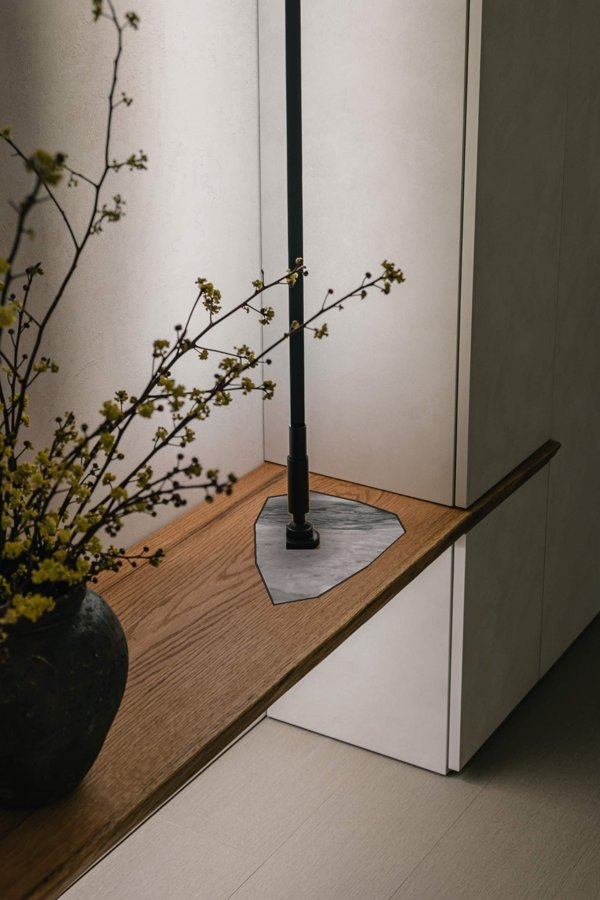

공학경영세미나 · 기말과제 · 비즈니스 모델과 고객검증
누구에게, 어떤 가치를 — 리후디자인 × 손동국
거버닝 '하고 싶은 것'이 아니라 '고객이 돈을 내는 이유'에서 출발하고 있음 — 사업 구조(BMC)에서 고객·가치 두 칸을 확대(VPC)해 맞물림을 검사함
- 읽는 순서 : 사업 구조 한 장(BMC) → 그중 고객 세그먼트·가치제안 두 칸을 확대한 캔버스(VPC) → 고객 쪽 3영역, 우리 쪽 3영역 → 맞물림(FIT) → 시장 적합성 판정 → 검증
- 포스트잇 색 = 근거 등급. 사실공개 정보·관찰 가설검증 전 추정 반증틀릴 수 있는 이유와 확인 방법
- 판정 원칙 : 좋아 보이는 가설도 반증을 옆에 붙임. 짝 없는 기능은 버림. 기각되는 가설도 결과임



쉽게 말하면 사업이 될지 안 될지는 우리가 뭘 잘하느냐가 아니라, 누가 무엇 때문에 돈을 내느냐로 정해집니다. 그래서 이 자료는 전부 '고객 쪽'에서 시작합니다.
시장 배경
인쇼 = 지배적 디자인, 병목은 실행력
거버닝 표준은 이미 정해졌고 고객 눈높이는 올라갔으며, 그 표준을 시공까지 해내는 손은 극소수임
- 사실인테리어쇼가 하이엔드 가정 인테리어의 형식을 대중에게 가르쳤고, 아카데미로 업체도 교육함 — 리후도 수료
- 가설형식이 굳으면 경쟁은 '어떤 스타일'에서 '누가 믿을 수 있게 해내나'로 이동함
- 반증표준이 굳을수록 모방 업체가 늘어 가격 경쟁이 심해질 수 있음 → 확인 : 경기 남부 '인쇼 스타일' 표방 업체 수·㎡당 단가 조사
- 반증인쇼 브랜드는 사용 불가, 수료 표기도 규정 확인 → 자기 브랜드가 전제
쉽게 말하면 스마트폰이 다 아이폰 모양이 된 것처럼 '다들 이게 맞다'는 형식이 생기는 걸 지배적 디자인이라고 합니다. 형식이 정해지면 돈은 '얼마나 잘, 얼마나 믿을 수 있게 만드느냐'로 갑니다.
리후 진단
핵심 역량은 '되돌리기 어려운 공정을 대표가 직접'
거버닝 설비·방수·바닥을 대표가 직접 하고 형식이 고정되면 최고 완성도로 반복함 — 다만 그 희소함이 고객에게 보이지 않고 있음
잘하는 것
- 매립수전·배관 등 설비 직접 시공
- 미장·수평몰탈·곰방 등 기초 공정
- 인쇼 형식을 시공까지 구현하는 몇 안 되는 손
- 형식 고정 시 반복 품질 높음
부족한 것
- 홍보·영업 — 후킹 장치 없음
- 프로세스 — 견적·공정·소통이 사람 손
- 디자인·색감 — 형식 없으면 결과가 흔들림
- 반증'대표 직접'은 건수 상한을 만듦 → 프리미엄 소량이 전제
쉽게 말하면 남보다 확실히 잘하는 한 가지를 핵심 역량이라고 합니다. '벽 닫기 전 공정을 대표가 직접'은 고객이 돈 내는 이유가 되고 남이 쉽게 못 따라합니다. 나머지는 빌리거나, 표준으로 만들거나, 자동화로 메웁니다.
비즈니스 모델 캔버스 (BMC)
사업 구조 한 장 — 가운데 두 칸을 오른쪽 캔버스로 확대함
거버닝 합성·큐레이션·견적은 비용이 거의 안 들고 시공은 건당 변동비임 — 재고·공장 없이 작게 검증할 수 있는 구조로 짜고 있음
핵심 파트너
- 손동국(AI 프로세스·시스템 지원)
- 자재·석재 공급처
- 목공·조명 외주
- (후) 제휴 업체
핵심 활동
- 공간 표준·팔레트 레시피화
- 집 사진 합성·견적 자동화
- 대표 직접 시공 + 공정 리포트
가치제안 → VPC 왼쪽
- 공사 전에 내 집에서 결과를 본다
- 되돌리기 어려운 공정은 대표가 직접, 사진으로 증명
- 인쇼 표준을 공간 단위로 확정가·확정 공기
- 이 급을 이 가격에(레퍼런스 대비)
- (삼성) 할인 가전을 살리는 빌트인 플랜
고객 관계
- 유료 시안으로 선별
- 공정 리포트·체크포인트
- 완성 촬영본 → 고객이 홍보
고객 세그먼트 → VPC 오른쪽
- ① 경기 남부 반도체 종사자(삼성 / 하이닉스 분리)
- ② 한두 공간만 바꾸고 싶은 거주자(이사·신혼)
- ③ 리뉴얼 주기 카페·스몰브랜드
핵심 자원
- 인쇼 표준을 구현하는 시공력(희소)
- 실제 시공된 카탈로그(자택)
- 레퍼런스·가격 DB, 리포트 아카이브
채널
- 자택·현장 사진 콘텐츠
- 사내 커뮤니티·지인 소개(세그먼트 ①)
- 인쇼 스타일 검색 수요
비용 구조
- 시공 원가·자재(건당 변동비) · 합성·견적 툴(준고정) · 재고·공장 없음
수익원
- 시안비 → 한 장면 패키지 마진(S/M/L) → 소재·가전 플랜 옵션 → (후) 레시피·툴 라이선스
쉽게 말하면 사업을 9칸에 적는 이유는 '빠진 칸'을 찾기 위해서입니다. 리후는 왼쪽(만드는 힘)은 찼는데 오른쪽(누구에게 무엇을 약속하나)이 비어 있었습니다. 그 두 칸을 다음 장에서 크게 봅니다.
Products & Services · 제품·서비스
'확인된 한 장면'을 팔고 있음
거버닝 카탈로그·미리보기·직접 시공·확정가 4종 묶음임 — 각 항목은 오른쪽 고객 포스트잇에 짝이 있어야 살아남음
상품공간 표준 5종 × 팔레트 3종 카탈로그
상품집 사진 합성 미리보기 24h · 유료 · 계약 시 차감
상품되돌리기 어려운 공정 대표 직접 + 사진 리포트
상품한 장면 확정가 S/M/L · 확정 공기
옵션(삼성)할인 가전 추천 + 빌트인 디테일 플랜
옵션자투리 대리석 인레이 등 소재 업그레이드
쉽게 말하면 효인 대표의 손기술을 '메뉴판'으로 만드는 겁니다. 메뉴가 있어야 고객이 고를 수 있고, 우리는 반복해서 잘 만들 수 있습니다.
Gain Creators · 혜택 창출
'이 급을 이 가격에'를 숫자로 보여주고 있음
거버닝 비교표·스펙·가전 할인 활용이 숫자로 판단하는 고객의 언어라고 보고 있음
기대 충족확정 결과·예산·일정 — 시안=견적=계약
요구 충족해외 레퍼런스 vs 우리 : 가격·스펙·공기 비교표
요구 충족소재·조명 스펙을 숫자로(연색성·두께·내구)
놀람(삼성)할인 가전의 가치를 살리는 빌트인 플랜
놀람완성 촬영본 — 자랑 자산
반증비교에 강한 고객은 비교 후 '더 싼 데'로 갈 수 있음 → 근거 제시 후 수용가 vs 최저가 선택률
쉽게 말하면 300만 원은 비싸게 들리지만 '해외 브랜드면 1,000만 원인 걸 300만 원에'는 싸게 들립니다. 비교 기준을 우리가 먼저 주는 게 핵심입니다.
Pain Relievers · 불만 해결
되돌릴 수 없다는 공포를 세 시점의 가시화로 풀고 있음
거버닝 공사 전 미리보기 · 공사 중 리포트 · 공사 후 촬영 — 신뢰 축 Pain에 정면 대응함
신뢰공사 전 : 내 집 사진 위의 결과를 본다(지을 수 있는 것만)
신뢰공사 중 : 벽 닫기 전 사진 + 되돌림 가능 체크포인트
돈정찰 S/M/L — 비교 불가·추가비용 불안 제거
시간3택1 큐레이션 — 바쁜 고객의 결정 피로 감소 / 공기 확정
안목레퍼런스·스펙 카드 — 용어 몰라도 판단 가능
반증리포트가 걱정을 키울 수 있음(과정의 거친 모습) → 1차 프로토타입에서 반응 측정
쉽게 말하면 불안은 설명으로 안 없어지고 보여줘야 없어집니다. 배관을 직접 하는 건 지금도 사실인데 고객은 벽이 닫힌 뒤에 와서 모릅니다. 닫기 전 사진 한 장이 그 기술을 돈 내는 이유로 바꿉니다.
Gains · 혜택
기대·요구·놀람 3층으로 나누고 있음
거버닝 '휴식되는 집'과 '따뜻함'은 아직 가설임 — 검증 전엔 차별화 축으로 쓰지 않음
기대정해진 결과·예산·날짜
요구 · 가설퇴근 후 쉬는 집 — 따뜻하고 조용한 분위기
요구 · 가설같은 돈이면 더 나은 것 — 비교 근거를 원함
놀람손님이 '이거 뭐예요?' 하는 한 장면
놀람(삼성)산 김에 제대로 — 할인 가전이 돋보이는 집
반증따뜻함 선호는 추정 — 차갑고 미니멀한 취향도 많음 → 팔레트 3종 선호 설문
쉽게 말하면 '기대'는 당연히 받아야 하는 것, '요구'는 말로 하는 것, '놀람'은 말 안 했는데 받으면 좋아하는 것. 세 층을 나눠야 뭘 기본으로 넣고 뭘 차별화로 쓸지 정해집니다.
Customer Jobs · 고객의 할 일
기능·감정·사회의 일을 동시에 하고 있음
거버닝 감정의 일(후회 없는 결정)이 결정을 지배한다고 보고 있음 — 인터뷰로 확인 전까지는 가설임
기능예산 안에서 한두 공간을 하이엔드로
기능이사·입주 일정에 맞춰 끝내기, 결정 최소화
감정후회 없는 결정, 안심하고 맡기기
감정 · 가설바쁜 일상의 보상 — 집에서 회복하기
사회동료·지인에게 안목 있어 보이기
반증생활공간이라 바쁘다고 미루진 않음, 대신 집값 때문에 싸게·최소로 하거나 믿고 통째로 맡김 → 이사 시 공사 범위·예산·위임 방식 설문
쉽게 말하면 고객은 벽지를 사는 게 아니라 '후회 안 할 결정'과 '쉬는 집'을 사러 옵니다. 그 일을 대신 잘 끝내주는 게 우리 상품입니다.
Pains · 불만
돈·시간·신뢰·안목 4축으로 빠짐없이 나누고 있음
거버닝 가장 무거운 축은 신뢰(되돌릴 수 없음)로 보고 있음 — 순위는 우리가 정하지 않고 중요도×빈도로 잼
신뢰되돌릴 수 없음 · 시안≠결과 · 업체 불신
돈견적 불투명, 비교 불가, 추가비용
시간공사 중 생활 중단, 바쁜데 결정 요구가 많음
안목용어·소재를 몰라 판단 어려움, 남들 다 하는 것
안목(삼성)할인 가전을 샀는데 집과 안 어울림
반증'신뢰 1순위'는 추정 — 가격이 1순위일 수 있음 → 인터뷰 10명 중요도×빈도
쉽게 말하면 고객의 괴로움을 네 서랍(돈·시간·신뢰·안목)에 빠짐없이 나눠 넣었습니다. 어느 서랍이 제일 무거운지는 우리가 정하지 않고 인터뷰로 잽니다.
FIT · 맞물림 검사
우리가 주는 것마다 고객 쪽 짝이 있는가
거버닝 짝이 있는 기능만 남기고 있음 — 짝이 '가설'에만 걸린 기능은 보류, 짝이 없는 기능은 버림
| 우리가 주는 것 | 고객 쪽 짝 (Jobs / Pains / Gains) | 짝의 근거 | 판정 |
|---|---|---|---|
| 집 사진 합성 미리보기 | Pain 신뢰 : 되돌릴 수 없음·시안≠결과 | 가설 | 유지 — H1·H2로 검증 |
| 대표 직접 시공 + 공정 리포트 | Pain 신뢰 : 업체 불신 / Job 감정 : 안심 | 관찰 | 유지 — 핵심 |
| 확정가 S/M/L | Pain 돈 : 견적 불투명·추가비용 | 관찰 | 유지 |
| 레퍼런스 대비 비교표·스펙 | Gain 요구 : 비교 근거(공대형 고객) | 가설 | 보류 — H3로 판정 |
| 3택1 큐레이션·따뜻한 팔레트 | Job 감정 : 쉬는 집 / Pain 시간 : 결정 피로 | 가설 | 보류 — 팔레트 선호 설문 |
| 할인 가전 연계 빌트인 플랜 | Gain 놀람 / Pain 안목 — 삼성 직원 한정 | 가설 | 보류 — H6, 하이닉스 세그먼트엔 제외 |
| 대리석 인레이 옵션 | Gain 놀람 : 손님이 묻는 장면 | 가설 | 옵션으로 격하 — 짝이 약함 |
쉽게 말하면 우리가 만들고 싶은 것 목록을 고객이 원하는 것 목록에 하나씩 꽂아 봅니다. 안 꽂히면 아무리 멋져도 뺍니다. 꽂히긴 하는데 추측으로만 꽂히면 '보류'입니다.
시장 적합성 판정
이 사업이 시장에 충분한가, 불충분한가
거버닝 적합 징후와 불충분 징후를 같은 무게로 적어 두고 있음 — 어느 쪽 신호가 먼저 쌓이는지로 판정함
적합하다고 볼 징후
- 유료 미리보기 결제율 ≥ 30% (실물 없이 돈을 냄)
- 인터뷰에서 '되돌릴 수 없음'이 상위 2위 안 ≥ 60%
- 근거 카드 제시 후 수용가가 오름(+20%p)
- 리후가 5종 중 4종을 확정가·확정 공기로 가능하다고 함
- 세그먼트 ①의 보너스 용처 상위 3위 안에 '집'
불충분하다고 볼 징후
- 미리보기 신청은 있는데 결제가 없음 → 구경 수요뿐
- 가격이 1순위 Pain → 하이엔드 소량 모델과 어긋남
- 비교 후 최저가 선택률이 높음 → 앵커링 실패
- 건수 상한(대표 직접)으로 월 매출이 생계선 미달
- 모방 업체가 같은 '한 장면 정찰'을 더 싸게 냄
시장 크기 가늠(페르미, 전부 추정) 경기 남부 반도체 종사자 수만 명 × 연간 이사·리모델링 의향 10~20% × 한 장면 전환율 1~3% → 연 수백 건 규모의 후보 수요. 리후의 월 가능 건수(수 건)보다 크면 '좁지만 충분', 작으면 세그먼트 교체. 반증의향·전환율 가정 자체를 설문으로 교체해야 함
쉽게 말하면 '될 것 같다'를 믿지 말고, 되면 이런 숫자가 나오고 안 되면 저런 숫자가 나온다를 미리 적어 둡니다. 그래야 나중에 보고 싶은 것만 보지 않습니다.
타깃 세그먼트 (1순위 가설)
경기 남부 반도체 종사자 — 돈·눈높이·비교 성향
거버닝 가처분소득이 늘었고 거주지가 모여 있으며 숫자로 비교하는 사람들이라 '근거 있는 하이엔드'가 먹힐 것으로 보고 있음 — 핵심 가정 4개는 전부 검증 대상임
사실 (공개 정보)
- 사실삼성전자·SK하이닉스의 대규모 성과급 지급이 보도됨
- 사실사업장이 수원·화성·용인·평택·이천에 집중 → 거주지도 경기 남부 밀집
- 사실삼성 임직원은 패밀리넷으로 자사 가전 할인 구매 가능(하이닉스 해당 없음)
- 관찰공대 출신 비중이 높고 업무에서 숫자·비교가 일상
가설 → 반증 → 확인
- 가설이사·리모델링 수요↑ 반증보너스는 저축·대출 상환·투자 우선일 수 있음 → 용처 설문 n≥20
- 가설휴식·따뜻함 선호 반증취향은 분산 → 팔레트 3종 선호 조사
- 가설비교·근거 중시 → 앵커링이 통함 반증비교 후 최저가 → 근거 카드 A/B
- 가설가전 연계가 가치 반증신축 입주면 이미 빌트인·옵션 → 입주 형태(신축/구축) 조사
- 가설바빠서 공사를 미룸 반증구축 이사면 도배·장판은 하고 들어가고 내 집이면 더 고침, 단 집값 때문에 싸게 / 이사 못 가면 지금 집 고쳐 살기 고민 → 입주 전·거주 중 수요 분리 조사
- 가설성격상 셀인 선호 반증바쁘면 오히려 믿고 원스탑 맡길 곳을 찾음, 단 열심히 알아본 뒤 맡김 → '검증형 위임' 비율 조사
- 가설본인(공대형)이 결정 반증배우자가 결정자이고 맘카페 평판이 채널일 수 있음 → 결정자·정보원 조사
쉽게 말하면 '돈이 생긴 사람들이 집에 쓴다'는 그럴듯하지만 확인 안 된 추측입니다. 그럴듯한 말마다 '틀릴 수 있는 이유'를 옆에 붙여 두고, 20명한테 물어본 뒤에 믿기로 했습니다. 삼성과 하이닉스는 가전 할인 유무가 달라 따로 셉니다.
검증 · 확증편향 방지
가장 싼 실험부터, 기각도 결과
거버닝 실물 없이 합성 시안만으로 수요를 먼저 재고 있음 — 가설마다 성공 기준과 '틀렸을 때 바꿀 것'을 미리 적어 둠
| # | 가설(측정 가능하게) | 성공 기준 | 기각 시 바꿀 것 |
|---|---|---|---|
| H1 | 신뢰(되돌릴 수 없음)가 최상위 Pain | 인터뷰 10명, 상위 2위 안 60% | 가격 중심 상품으로 재설계 |
| H2 | 유료 합성 미리보기에 돈을 냄 | 신청 20건 중 결제 30% | 미리보기는 무료 후킹으로 전환 |
| H3 | 근거 카드가 지불의향을 올림 | A/B 수용률 +20%p | 앵커링 대신 레퍼런스 사진만 |
| H4 | 반도체 종사자 보너스 용처에 '집'이 상위 3위 | 설문 n≥20 | 세그먼트를 '이사·신혼'으로 교체 |
| H5 | 리후가 공간 5종을 확정가·확정 공기로 반복 가능 | 레시피표 검토 5개 중 4개 | 2~3종으로 축소 |
| H6 | 가전 연계 플랜 선호(삼성 직원) | 10명 중 5명 '검토' | 옵션에서 제외 |
쉽게 말하면 큰돈 쓰기 전에 작은 실험으로 확인합니다. 중요한 건 '맞으면 좋고'가 아니라 '틀리면 뭘 바꿀지'를 먼저 적어 두는 겁니다. 시안은 반드시 '예상 시안'이라고 밝힙니다.
실행 구조 · 역할
손은 시공, 머리는 헤드쿼터, 시스템은 프로세스
거버닝 효인은 시공·현장, 기헌 대표는 회사 운영·홍보·헤드쿼터, 동국은 프로세스·시스템만 맡음 — 사람을 더 뽑지 않고 역할로 체계를 갖춤
백효인 — 시공·현장
- 설비·방수·바닥 등 되돌릴 수 없는 공정 직접 시공
- 하이엔드 디테일 구현, 시공 레시피 확정(순서·자재·공기)
- 시공자 네트워크 운영, 현장 사진·공정 기록
이기헌 — 회사 운영·홍보·헤드쿼터
- 고객 상담·계약·일정 등 회사 운영 총괄
- 유튜브·블로그·맘카페 등 홍보와 고객 접점
- 파트너·스튜디오 관계, 가격·상품 결정
손동국 — 프로세스·시스템
- 견적·공정표·주간 리포트 자동 생성
- 단가DB·고객 기록·조사 과제 도구 운영
- 디자인은 맡지 않음 — 규칙 있는 일만 시스템으로
AI 3곳 ① 견적(단가DB → 자동 산출) ② 공정 관리(현장 사진 → 주간 리포트) ③ 고객 기록(첫 상담·사후 연락 → 시트 축적) · 반증자동화가 '정성'을 지운다고 느낄 수 있음 → 리포트는 대표 명의 한 줄 코멘트 동반
쉽게 말하면 사람을 더 뽑으면 고정비가 늘어 더 위험해집니다. 효인 대표는 시공, 기헌 대표는 회사 운영과 홍보, 동국은 규칙 있는 일을 시스템으로 돌리는 역할만 맡습니다.